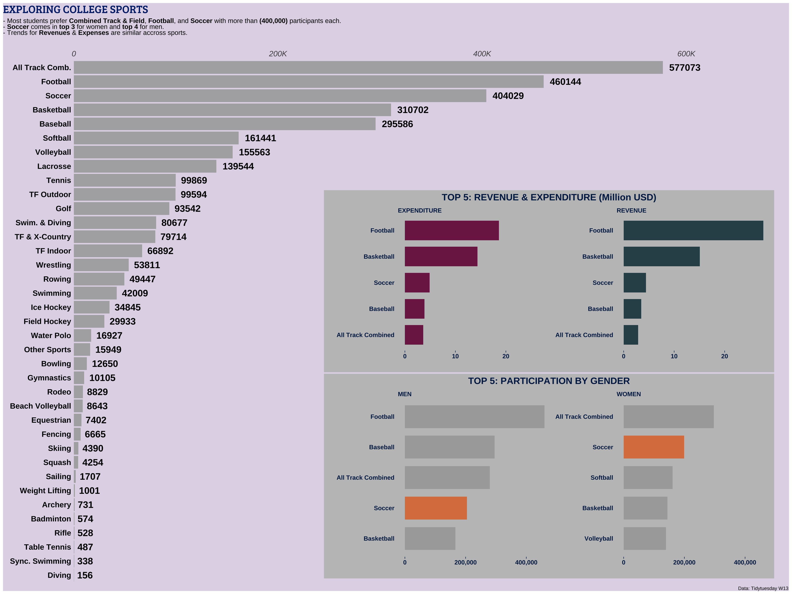

Exploring US college sports.
knitr::opts_chunk$set(echo = TRUE)
library(tidyverse)
library(scales)
library(tidytuesdayR)
library(rmarkdown)
library(ggcharts)
library(hrbrthemes)
hrbrthemes::import_roboto_condensed()
library(ggtext)
library(showtext)
library(patchwork)
font_add_google('Bree Serif')
showtext_auto()
# For more on showtext, see this [link](https://babichmorrowc.github.io/post/2019-10-11-google-fonts/) or this [link](https://cran.r-project.org/web/packages/showtext/vignettes/introduction.html)
# A tibble: 38 × 2
sports n
<chr> <int>
1 Basketball 10000
2 Volleyball 9122
3 Soccer 8647
4 Baseball 8644
5 Softball 8560
6 Golf 7060
7 Tennis 6418
8 Football 5310
9 Track and Field, X-Country 4923
10 All Track Combined 4870
# … with 28 more rows# ***** Main plot data: total participants par sports category (Men + Women)
data_main_plot <- data %>%
select(sports, partic_men, partic_women) %>% # cols of interest
mutate_if(is.double, ~replace(., is.na(.), 0)) %>%
mutate(
partic_total = partic_men + partic_women,
sports = case_when(
sports == 'Track and Field, X-Country' ~ 'TF & X-Country',
sports == 'All Track Combined' ~ 'All Track Comb.',
sports == 'Track and Field, Outdoor' ~ 'TF Outdoor',
sports == 'Track and Field, Indoor' ~ 'TF Indoor',
sports == 'Swimming and Diving' ~ 'Swim. & Diving',
sports == 'Synchronized Swimming' ~ 'Sync. Swimming',
TRUE ~ sports) # Renaming to shorten categ names before plotting
) %>%
group_by(sports) %>%
summarise(tot_part = sum(partic_total)) %>%
filter(tot_part > 0)
# ***** By gender plot: top 5 sports by gender
by_gender_data <- data %>%
select(
sports,
partic_men, partic_women,
total_rev_menwomen, total_exp_menwomen) %>%
mutate_if(is.double, ~replace(., is.na(.), 0)) %>%
group_by(sports) %>%
summarise(
MEN = sum(partic_men),
WOMEN = sum(partic_women),
rev = sum(total_rev_menwomen),
exp = sum(total_exp_menwomen)) %>%
mutate(tot = MEN + WOMEN) %>%
pivot_longer(
cols = c(MEN, WOMEN),
names_to = 'gender',
values_to = 'participants') %>%
mutate(col = case_when(
sports == 'Soccer' ~ 'yes',
TRUE ~ 'no'))
# ***** Cashflow plot: top 5 sports by total revenue and expenditure
exp_rev_data <- data %>%
select(
sports,
partic_men, partic_women,
total_rev_menwomen, total_exp_menwomen) %>%
mutate_if(is.double, ~replace(., is.na(.), 0)) %>%
group_by(sports) %>%
summarise(
REVENUE = sum(total_rev_menwomen),
EXPENDITURE = sum(total_exp_menwomen)) %>%
pivot_longer(
cols = c(REVENUE, EXPENDITURE),
names_to = 'cashflow',
values_to = 'amount') %>%
mutate(amount = amount / 1000000000)
paged_table(data_main_plot)
paged_table(by_gender_data)
paged_table(exp_rev_data)
title_main <- "EXPLORING COLLEGE SPORTS"
subtitle_main <- "<span style = 'color:black'> - Most students prefer **Combined Track & Field**, **Football**, and **Soccer** with more than </span><span style = 'color:black'>**(400,000)**</span> participants each.<br><span style = 'color:black'> - **Soccer**</span><span style = 'color:black'> comes in **top 3** for women and **top 4** for men.</span><br><span style = 'color:black'> - Trends for **Revenues** & **Expenses** are similar accross sports.</span>"
plot_1 <- data_main_plot %>%
ggplot(aes(
tot_part,
fct_reorder(sports, tot_part))
)+
geom_col(fill = '#a9a9a9', alpha = .9)+
geom_text(
aes(label = tot_part),
hjust=-.2, fontface = 'bold', size = 6, color = 'black')+
scale_x_continuous(
limits = c(0, 700000),
breaks = c(0, 200000, 400000, 600000),
labels = c('0', '200K', '400K', '600K'),
position = 'top',
expand = c(0, 0)
)+
labs(x = '',
y = '',
title = title_main,
subtitle = subtitle_main,
caption = 'Data: Tidytuesday W13')+
theme(
panel.background = element_blank(),
plot.background = element_rect(fill = '#e1d8e8', color = '#e1d8e8'),
panel.grid = element_blank(),
axis.ticks = element_blank(),
axis.text.y = element_text(face = 'bold', size = 14, color = '#010203'),
axis.text.x = element_text(face='italic', size = 14),
plot.title.position = 'plot',
plot.title = element_markdown(family = 'Bree Serif', size = 20, color = '#002a77'),
plot.subtitle = element_markdown(margin = margin(0, 0, .4, 0, unit = 'cm'), size = 12),
plot.margin = unit(c(5, 1, 0, 0), "pt")
)
plot_2 <- by_gender_data %>%
bar_chart(sports, participants, facet = gender, top_n = 5, fill = col)+
scale_y_continuous(
name = '',
labels = scales::comma_format(),
breaks = c(0, 200000, 400000))+
scale_fill_manual(values = c('darkgrey', '#DB804E'))+
labs(
x = '',
title = 'TOP 5: PARTICIPATION BY GENDER')+
theme_ggcharts(ticks = 'X')+
theme(
legend.position = 'none',
plot.title = element_text(hjust = .5, face = 'bold'),
axis.text = element_text(face = 'bold'),
plot.background = element_rect(fill = '#C1C1C1', color = '#C1C1C1'))
plot_3 <- exp_rev_data %>%
bar_chart(sports, amount, facet = cashflow, top_n = 5, fill = cashflow)+
scale_y_continuous(
name = '',
labels = scales::comma_format())+
scale_fill_manual(values = c('#7d2454', '#304E57'))+
labs(
x = '',
title = 'TOP 5: REVENUE & EXPENDITURE (Million USD)')+
theme_ggcharts(ticks = 'X')+
theme(
legend.position = 'none',
plot.title = element_text(hjust = .5, face = 'bold'),
axis.text = element_text(face = 'bold'),
plot.background = element_rect(fill = '#C1C1C1', color = '#C1C1C1'))
pp <- plot_1 +
inset_element(plot_2, 0.35, 0.01, .98, .4) + # left-bottom-right-top
inset_element(plot_3, 0.35, 0.403, .98, .75)
pp
